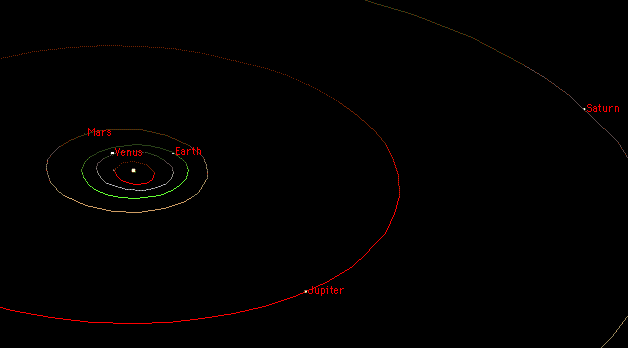
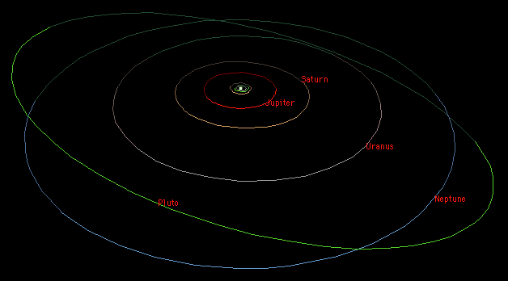
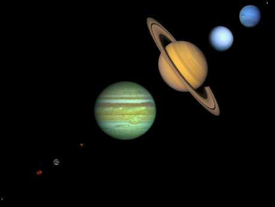

An Overview of the Solar System
Orbits
The solar system consists of the Sun; the nine planets,
more than 130 satellites of the planets,
a large number of small bodies
(the comets and asteroids), and the interplanetary medium.
(There are probably also many more planetary satellites that have not yet been discovered.)
The inner solar system contains the Sun,
Mercury,
Venus,
Earth and
Mars:

The main asteroid belt (not shown)
lies between the orbits of Mars and Jupiter.
The planets of the outer solar system are
Jupiter,
Saturn,
Uranus,
Neptune and
Pluto:

The first thing to notice is that the solar system is mostly empty
space. The planets are very small compared to the space between them.
Even the dots on the diagrams above are too big to be in proper scale
with respect to the sizes of the orbits.
The orbits of the planets are ellipses
with the Sun at one focus, though
all except Mercury and Pluto are very nearly circular.
The orbits of the planets are all more or less in the same
plane (called the ecliptic and defined by the plane of the
Earth's orbit). The ecliptic is inclined only 7 degrees from the plane
of the Sun's equator.
Pluto's orbit deviates the most from the plane of the ecliptic
with an inclination of 17 degrees.
The above diagrams show the relative sizes of the orbits
of the nine planets from a perspective somewhat above the ecliptic
(hence their non-circular appearance).
They all orbit
in the same direction (counter-clockwise looking down from above the Sun's north
pole); all but Venus, Uranus and Pluto also rotate in that same sense.
(The above diagrams show correct positions for October 1996 as generated by the
excellent planetarium program
Starry Night;
there are also many other similar programs
available, some free.)
Sizes

The above composite shows the nine planets
with approximately correct relative
sizes (see another
similar composite
and a
comparison of the terrestrial planets
or Appendix 2 for more).
One way to help visualize the relative sizes in the solar system is to imagine
a model in which everything is reduced in size by a factor of a billion.
Then the model Earth would be about 1.3 cm in diameter (the size of a grape).
The Moon would be about 30 cm (about a foot) from the Earth.
The Sun would be 1.5 meters in diameter (about the height of a man) and
150 meters (about a city block) from the Earth.
Jupiter would be 15 cm in diameter (the size of a large grapefruit) and 5 blocks away
from the Sun.
Saturn (the size of an orange) would be 10 blocks away;
Uranus and Neptune (lemons) 20 and 30 blocks away.
A human on this scale would be the size of an atom but the nearest star would be over
40000 km away.
Not shown in the above illustrations
are the numerous smaller bodies that inhabit the solar system:
the satellites of the planets; the large number of
asteroids (small
rocky bodies)
orbiting the Sun, mostly between Mars and Jupiter but also elsewhere;
the comets (small icy bodies) which
come and go from the inner parts of the solar system in highly elongated
orbits and at random orientations to the ecliptic;
and the many small icy bodies beyond Neptune in the Kuiper Belt.
With a few exceptions, the planetary satellites orbit in the same
sense as the planets and approximately in the plane of the ecliptic but
this is not generally true for comets and asteroids.
Classification
The classification of these objects
is a matter of minor controversy. Traditionally,
the solar system has been divided into planets (the big bodies
orbiting the Sun),
their satellites (a.k.a. moons, variously sized objects orbiting the planets),
asteroids (small dense objects orbiting the Sun) and comets
(small icy objects with highly eccentric orbits).
Unfortunately, the solar system has been found to be more complicated than
this would suggest:
- there are several moons larger than Pluto and two larger than Mercury;
- there are many small moons that are probably started out as asteroids and were only later captured by a planet;
- comets sometimes fizzle out and become indistinguishable from asteroids;
- the Kuiper Belt objects and others like
Chiron don't fit this scheme well and some even want to consider
Pluto as part of this class;
- The Earth/Moon and Pluto/Charon systems
are sometimes considered "double planets".
Other classifications based on chemical composition and/or point of origin
can be proposed which attempt to be more physically valid.
But they usually end up with either too many classes or too many exceptions.
The bottom line is that many of the bodies are unique; our present
understanding is insufficient to establish clear categories.
In the pages that follow, I will use the conventional categorizations.
The nine bodies officially categorized as planets are
often further classified in several ways:
- by composition:
- terrestrial or rocky planets:
Mercury, Venus, Earth, and Mars:
- The terrestrial planets are composed primarily of rock and metal
and have relatively high densities, slow rotation,
solid surfaces, no rings and few satellites.
- jovian
or gas planets: Jupiter, Saturn, Uranus, and Neptune:
- The gas planets are composed primarily of hydrogen and helium
and generally have low densities,
rapid rotation, deep atmospheres, rings
and lots of satellites.
- Pluto.
- by size:
- small planets: Mercury, Venus, Earth, Mars and Pluto.
- The small planets have diameters less than 13000 km.
- giant planets: Jupiter, Saturn, Uranus and Neptune.
- The giant planets have diameters greater than 48000 km.
- Mercury and Pluto are sometimes referred to as lesser planets
(not to be confused with minor planets which
is the official term for asteroids).
- The giant planets are sometimes also referred to as gas giants.
- by position relative to the Sun:
- inner planets: Mercury, Venus, Earth and Mars.
- outer planets: Jupiter, Saturn, Uranus, Neptune and Pluto.
- The asteroid belt between Mars and Jupiter forms the boundary
between the inner solar system and the outer solar system.
- by position relative to Earth:
- inferior planets: Mercury and Venus.
- closer to the Sun than Earth.
- The inferior planets show phases like the Moon's when viewed from
Earth.
- Earth.
- superior planets: Mars thru Pluto.
- farther from the Sun than Earth.
- The superior planets always appear full or nearly so.
- by history:
- classical planets: Mercury, Venus, Mars, Jupiter, and Saturn.
- known since prehistorical times
- visible to the unaided eye
- modern planets: Uranus, Neptune, Pluto.
- discovered in modern times
- visible only with telescopes
- Earth.
Pictures
Note: most of the images in The Nine Planets are not true color.
Most of them were created by
combining several black and white images taken thru various color filters.
Though the colors may look "right" chances are they aren't exactly
what your eye would see.
- The Nine Planets montage (larger version of the above)
36k jpg
- Another relative size comparison (from LANL)
93k gif
- Sun and large planet comparison (from Extrema)
41k gif
- Earth and small body comparison (from Extrema)
35k gif
- Voyager 1 mosaic of the solar system from 4 billion miles out
36k jpg;
html
(caption)
- Voyager 1 images of 6 planets from 4 billion miles out
123k jpg;
html
- Pale Blue Dot, reflections on the above image by Carl Sagan.
More General Overview
The Big Questions
- What is the origin of the solar system? It is generally agreed
that it condensed from a nebula
of dust and gas. But the details
are far from clear.
- How common are planetary systems around other stars?
There is now good evidence
of Jupiter-sized objects orbiting
several nearby stars. What conditions
allow the formation of terrestrial planets?
It seems unlikely that the Earth is totally unique but we still
have no direct evidence one way or the other.
- Is there life elsewhere in the solar system? If not, why is Earth
special?
- Is there life beyond the solar system? Intelligent life?
- Is life a rare and unusual or even unique
event in the evolution of the universe or is it adaptable,
widespread and common?
Answers to these questions, even partial ones, would be of enormous
value. Answers to the lesser questions on the pages that follow
may help answer some of these big ones.
Where to go next
 ... Intro/FAQ
... Overview
... Sun
... Data
... Intro/FAQ
... Overview
... Sun
... Data
Bill Arnett; last updated:
2004 Feb 19
{kind=link}
{kind=link}
{kind=link}
{kind=link}
{kind=link}
{kind=link}
{kind=link}